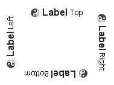
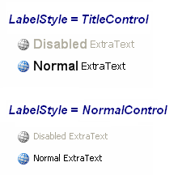

KryptonLabel
Use the KryptonLabel control when you need display text and images combined with the styling features of the Krypton Toolkit. For example, you can use the label to add descriptive captions to other controls such as text boxes or list boxes. The content of the control is contained in the Values property. You can define Text, ExtraText and Image details within the Values property.
Appearance
The LabelStyle property is used to define the top level styling required for the appearance of the KryptonLabel control. The four standard values are NormalControl, TitleControl, NormalPanel and TitlePanel. It is important to understand when to use which style in order to get the correct appearance when switching to different palettes.
When using a label that is positioned with on a Control style background, such as ControlClient or ControlAlternate, then you should use the NormalControl or TitleControl styles. A good example would be placing label instances in the client area of a KryptonHeaderGroup, as the header group has a default background style in the client area of ControlClient. If however you are placing label instances onto a KryptonPanel then you should use the NormalPanel or TitlePanel styles. It is easy to forget to set the appropriate style because most of the builtin palettes have colors that look fine on either a Control or Panel style background. But if you use the Office 2007 - Black palette then it will fail to appear correctly as the colors are radically different. In that scenario a NormalControl on a Panel background would be invisible!
The NormalControl and NormalPanel styles give a standard text appearance appropriate for use as a caption for other controls. Alternatively use the TitleControl/TitlePanel settings for use as a section header where the text needs to be more prominent. See figure 2 for examples of the visual difference. There are also custom styles that can be defined via a KryptonPalette for situations where you need to create variations on the styles already provided. Custom styles are named simply Custom1, Custom2 and Custom3.
You can use the Orientation property to rotate the control. The default setting of Top shows the content in a left to right and top to bottom arrangement. Specify Bottom to have the control displayed upside down, Left to show the content rotated 90 degrees left and Right for 90 degrees rotated right. See figure 1 for examples.

Figure 1 – Orientation Property
Two States
Only two possible states of Disabled and Normal are used by the label control. In order to customize the appearance use the corresponding StateDisabled and StateNormal properties. Note that only the content characteristics can be modified as the label control never has a border or background.
To speed up the customization process an extra StateCommon property has been provided. The settings from this are used if no override has been defined for the state specific entry. Note that the specific state values always take precedence and so if you define the text font in StateNormal and StateCommon then the StateNormal value will be used whenever the control is in the Normal state. Only if the StateNormal value is not overridden will it look in StateCommon.
UseMnemonic and Target
If you provide an ampersand in the label text and also set the UseMnemonic property to True then the label text will show the character after the ampersand as underlined. This indicates to the user that pressing the mnemonic character will cause an action to occur. As the label control cannot interact with the user when the character is pressed an additional Target property is used to indicate the control you would like to take the focus instead.
This is useful when you have a label control used as a description of an input field. For example, you might have a label with the text defined as '&Name' positioned next to a text box control. You would set the Target property to be a reference to the text box instance. Now when the user presses the mnemonic character N it would set focus to the text box.
Examples of Appearance
Figure 2 shows the appearance of the label for both LabelStyle values of Title and Normal. In each case the label is first shown in the Disabled state and then the Normal state.

Figure 2 – Example appearance